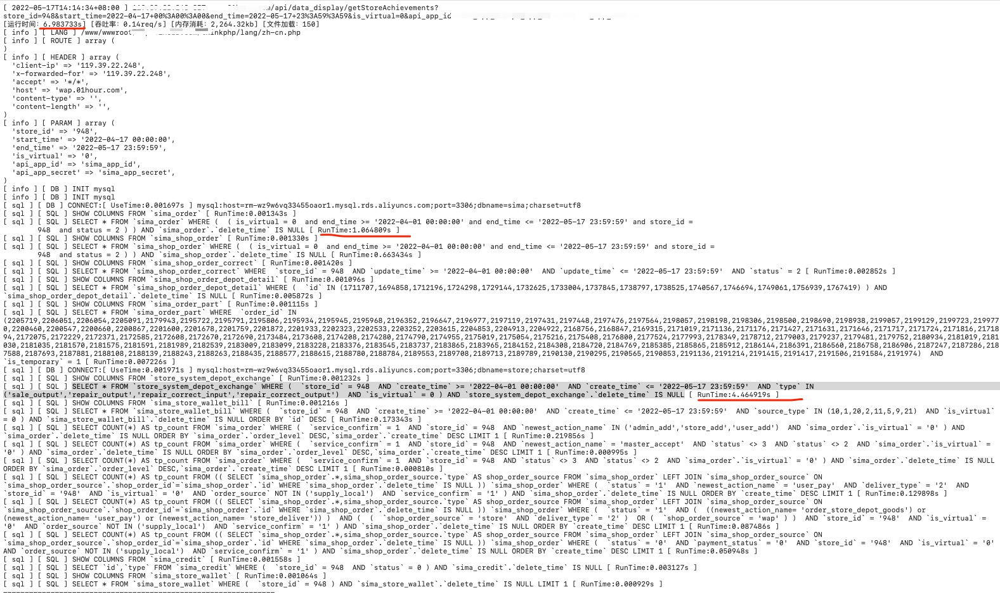

TP5.1 SQL日志

总耗时6.983733s, 主要划线的两条sql合计5.5s占据。
分析
优先处理store_system_depot_exchange表 索引查看
mysql> SHOW INDEX FROM store_system_depot_exchange;
+-----------------------------+------------+--------------+--------------+-------------+-----------+-------------+----------+--------+------+------------+---------+---------------+
| Table | Non_unique | Key_name | Seq_in_index | Column_name | Collation | Cardinality | Sub_part | Packed | Null | Index_type | Comment | Index_comment |
+-----------------------------+------------+--------------+--------------+-------------+-----------+-------------+----------+--------+------+------------+---------+---------------+
| store_system_depot_exchange | 0 | PRIMARY | 1 | id | A | 2794646 | NULL | NULL | | BTREE | | |
| store_system_depot_exchange | 1 | storeId_type | 1 | store_id | A | 975 | NULL | NULL | | BTREE | | |
| store_system_depot_exchange | 1 | storeId_type | 2 | type | A | 3965 | NULL | NULL | YES | BTREE | | |
+-----------------------------+------------+--------------+--------------+-------------+-----------+-------------+----------+--------+------+------------+---------+---------------+
3 rows in set (0.00 sec)
数据查看，0.35s，这里复现不出生产环境秒级查询。
mysql> SELECT * FROM `store_system_depot_exchange` WHERE(`store_id`= 52 AND `create_time`>= '2019-09-01 00:00:00' AND `create_time`<= '2019-10-17 23:59:59' AND `type` IN('sale_output', 'repair_output', 'repair_correct_input', 'repair_correct_output') AND `is_virtual`= 0) AND `store_system_depot_exchange`.`delete_time` IS NULL;
...省略
:28 | 2019-10-17 09:55:28 | NULL | 0 |
| 1607603 | 407375 | 0 | 3644 | 7609 | NULL | 715 | 1 | 714 | 3.00 | 40.00 | sale_output | 52 | 2019101753505152 | 2019-10-17 10:33:20 | 2019-10-17 10:33:20 | NULL | 0 |
| 1607896 | 407475 | 0 | 2922 | 209508 | NULL | 5 | 2 | 3 | 5.00 | 60.00 | sale_output | 52 | 2019101710154509 | 2019-10-17 11:46:26 | 2019-10-17 11:46:26 | NULL | 0 |
| 1608514 | 407651 | 0 | 3644 | 209547 | NULL | 5 | 1 | 4 | 2.50 | 10.00 | sale_output | 52 | 2019101710056511 | 2019-10-17 14:11:29 | 2019-10-17 14:11:29 | NULL | 0 |
+---------+-----------+----------+------------+-----------------+--------------+------------+-----+-----------+------------+-------------+-----------------------+----------+------------------+---------------------+---------------------+-------------+------------+
999 rows in set (0.35 sec)
explain 分析
mysql> explain SELECT * FROM `store_system_depot_exchange` WHERE(`store_id`= 52 AND `create_time`>= '2019-09-01 00:00:00' AND `create_time`<= '2019-10-17 23:59:59' AND `type` IN('sale_output', 'repair_output', 'repair_correct_input', 'repair_correct_output') AND `is_virtual`= 0) AND `store_system_depot_exchange`.`delete_time` IS NULL;
+----+-------------+-----------------------------+------------+-------+---------------+--------------+---------+------+-------+----------+------------------------------------+
| id | select_type | table | partitions | type | possible_keys | key | key_len | ref | rows | filtered | Extra |
+----+-------------+-----------------------------+------------+-------+---------------+--------------+---------+------+-------+----------+------------------------------------+
| 1 | SIMPLE | store_system_depot_exchange | NULL | range | storeId_type | storeId_type | 97 | NULL | 60632 | 0.11 | Using index condition; Using where |
+----+-------------+-----------------------------+------------+-------+---------------+--------------+---------+------+-------+----------+------------------------------------+
1 row in set, 1 warning (0.00 sec)
更改索引idx_storeId_createtime ，丢弃idx_storeId_type，type重复率高，放入索引没啥效果，选create_time高变动的数据。
mysql> CREATE INDEX idx_storeId_createtime ON store_system_depot_exchange (store_id,create_time);
Query OK, 0 rows affected (13.80 sec)
Records: 0 Duplicates: 0 Warnings: 0
mysql> DROP INDEX idx_storeId_type ON store_system_depot_exchange;
Query OK, 0 rows affected (0.05 sec)
Records: 0 Duplicates: 0 Warnings: 0
再次查询
mysql> SELECT * FROM `store_system_depot_exchange` WHERE(`store_id`= 52 AND `create_time`>= '2019-09-01 00:00:00' AND `create_time`<= '2019-10-17 23:59:59' AND `type` IN('sale_output', 'repair_output', 'repair_correct_input', 'repair_correct_output') AND `is_virtual`= 0) AND `store_system_depot_exchange`.`delete_time` IS NULL;
....省略
----+---------------------+-------------+------------+
999 rows in set (0.02 sec)
有关 Mysql Select QC缓存
在阿里云的云数据库RDS中，语句第一次查询可以复现，但是第二次就快很多倍。想到的是缓存，就查了相关资料，了解到是Select Query Cache如下。
查询缓存使用情况
mysql> SHOW STATUS LIKE 'Qcache%'; +-------------------------+--------+ | Variable_name | Value | +-------------------------+--------+ | Qcache_free_blocks | 0 | | Qcache_free_memory | 0 | | Qcache_hits | 0 | | Qcache_inserts | 0 | | Qcache_lowmem_prunes | 0 | | Qcache_not_cached | 668762 | | Qcache_queries_in_cache | 0 | | Qcache_total_blocks | 0 | +-------------------------+--------+ 8 rows in set (0.00 sec)
相关解释：
- Qcache_free_blocks: 查询缓存的可用内存量 如果该值非常大，则表明缓冲区中碎片很多。
- Qcache_free_memory: 查询缓存的可用内存量 Query Cache 中目前剩余的内存大小。通过这个参数我们可以较为准确的观察出当前系统中的Query Cache 内存大小是否足够，是需要增加还是过多了；
- Qcache_hits: 查询缓存命中数 多少次命中。通过这个参数我们可以查看到Query Cache 的基本效果；
- Qcache_inserts: 添加到查询缓存的查询数 多少次未命中然后插入。通过“Qcache_hits”和“Qcache_inserts”两个参数我们就可以算出Query Cache 的命中率了：Query Cache 命中率= Qcache_hits / ( Qcache_hits + Qcache_inserts )；
- Qcache_lowmem_prunes: 由于内存不足而从查询缓存中删除的查询数 值非常大，则表明经常出现缓冲不够的情况;
- Qcache_not_cached: 非缓存查询的数量（由于 query_cache_type 设置而无法缓存或未缓存） 因为query_cache_type 的设置或者不能被cache 的Query 的数量；
- Qcache_queries_in_cache: 查询缓存中注册的查询数 当前Query Cache 中cache 的Query 数量；
- Qcache_total_blocks: 查询缓存中的块总数 表示当前查询缓存占用的内存的block数量
查找缓存开启情况
查询
mysql> SHOW variables LIKE 'query_cache_type';
+------------------+-------+
| Variable_name | Value |
+------------------+-------+
| query_cache_type | OFF |
+------------------+-------+
1 row in set (0.00 sec)
注意：即使是OFF, ALIYUN MYSQL在短时间内查询还是会使用缓存
缓存关闭与开启
1、临时的直接再命令行执行
set global query_cache_size=0
set global query_cache_type=0
2、永久
my.cnf修改query_cache_size=0、query_cache_type=0
迭代
- 2022年05月17日 23:59:59 初稿
参考
1、MySQL查询缓存简单使用 - pedro7 - 博客园

本作品采用CC BY-NC-ND 4.0进行许可。转载，请注明原作者 chunpat 及本文源链接。